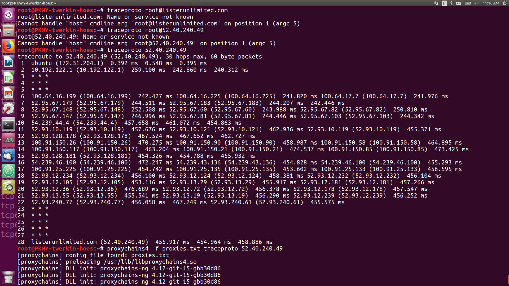
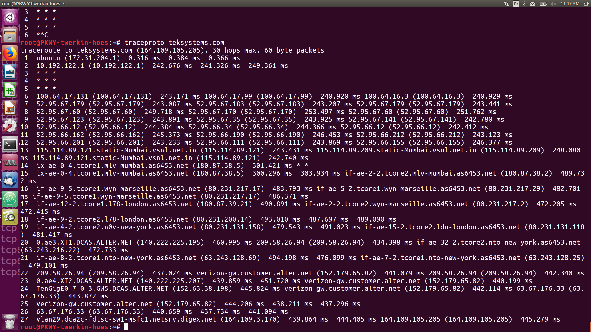

How to verify a working VPN.
Chang Tan
Lister Unlimited Cybersecurity Solutions, LLC.
307-220-3540
changtan@listerunlimited.com
Previously we discussed how we can make a VPN..
But how do we verify that it works?
traceproto "IPv4 Address"

You can also proxychain the request through any currently running proxies and verify that the chain is following your liking.
proxychains4 -f proxies.txt traceproto "IPv4 Address"

By observing that the traffic is following your predictable route, that is..
- Out of your network tunnel and home at 10.192.122.2
- Through Amazon's Network
- Exits from the last "safe zone" in Amazon's web services
- Enters enemy routing hop path (the factor you cannot control)
You can ensure that your traffic is safe. Albeit not anonymous. Such a thing cannot be guaranteed. As it is actually, Amazon Web Services' traffic now.
For example, observe the following, where I attempted to discern the routing path of the enemy, the TEKsystems netblock range.

Observe how...
Pay attention to the factors that your traffic is no longer secured.
- That I have full control of my traffic until router hop 15, the very end of my tunneled traffic.
- After that, it enters the enemy routing path located in France.
- It eventually finds it's way back to teksystems.com through a US entry point in New York.
- Then back through Verizon's AlterNet and into TEKsystems netblock range
Usually the shift from your own VPN controlled path to the uncontrollable enemy routes begins with a sudden spike in latency due to the switching from one ISP to another. In the first picture, the path has a latency spike at routing hop 10. The second at routing hop 10 as well. And the third picture at routing hop 14, where albeit it is still exiting my service from a VPS spun up at Mumbai, it switched local ISPs.
Procedure when it comes to customizing VPNs, proxies, and tunnels
Once you lose control of the path, there is nothing you can do. You should leverage what you can do, to ensure...
- That the traffic EXITS from you the way you want it.
- That the enemy is not aware of your precise IP of your VPN
- And that you manage to redirect traffic OUT of the United States or any country of origin
- Before it makes it's way back
This section was written as a response to the harassment I been receiving over a month, which included a firebombing attempted on my house late May 4th in the evening. A explosive device was hurled and detonated on the rooftops of my home.
I am here to let you know...
-
I have struck back against these assailants more than they can count
- Laying traps on my compromised router's web GUI by installing cryptominers, webshells, and javascript reverse shells on the login pages
- Building a automated injection flaw exploiter to do the same remotely (I will have it as a programming project later on in this book)
- Creating automated vulnerability scanner servers based on Nessus, OpenVAS, and Maltego and running it as a VPS between providers such as Amazon, Rackspace, Vultr, Linode, and DigitalOcean
- Secretly running packet captures to trace attacks back to their originators. As they often prefer to hack me when I am sleeping.
- Finally deploying my primary specialization's weapon, a amplified Wireless Attack Array.
- I have fought this war primarily with automated remote servers. What you are looking at (me) is NOT the attack. Rather, I programmed and scripted a machine to continue to apply pressure against you by exploiting injection flaws.
- Most of that can be done OFFLINE. All I do is write instructions as a app or script, test it thoroughly, and only need a one-minute window of time online to upload the instructions to a newly spun up machine.
- I did not leverage much of my primary specialization, wireless hacking UNTIL they began moving in next door. Once a firebomb landed on my roof, I deployed my amplified antenna arrays and began using the more destructive abilities in my specialization. Such as disrupting Wireless Distribution Systems and Wireless Intrusion Protection Systems, and being able to randomly merge routing tables with each other to crash the attackers' networks.
- I still retain forensic evidence of their activities despite their attempts to delete them
- I have my own ways of guaranteeing that my traffic cannot be tampered with(i)
- Maintaining a clandestine network of tunnels that provide VPN access and secure data transport
- Maintaining a strict protocol of counter-surveillance. My laptop boots with a "down-all_ifaces" script, that immediately shuts down the network cards and network daemons to keep it from accidentally connecting to untrusted networks
- On reboot, the laptop wipes forensics automatically by clearing logs and shredding the cache of each user including root.
(i) Actually any traffic, even VPNs can be tampered with as long as their is enough details to go around. But switching "providers" is as easy as contacting a VPS provider and having it spin up a new WireGuard, or OpenVPN, or Shadowsocks, or Tor + Obfs4 relay, or SSH, or L2TP, or Cisco AnyConnect instance for me.